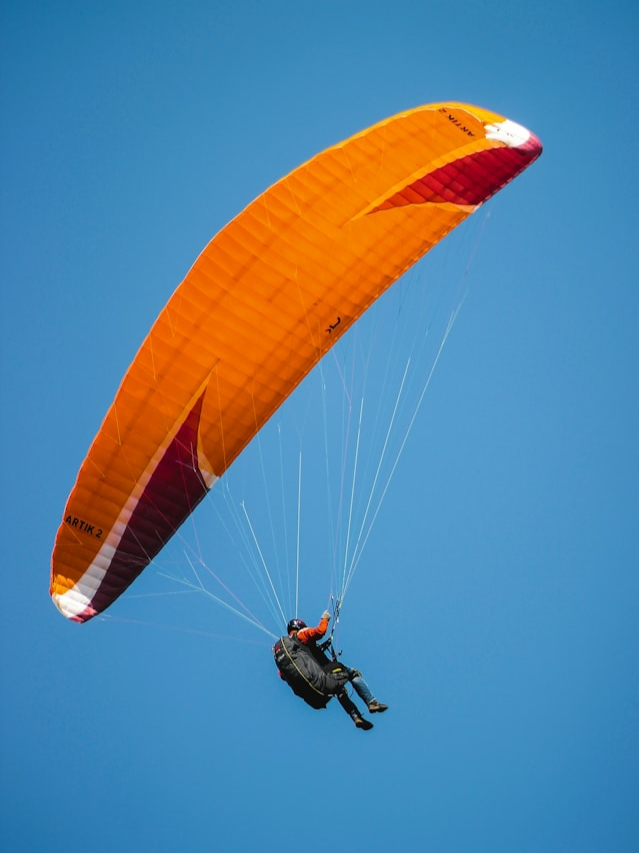
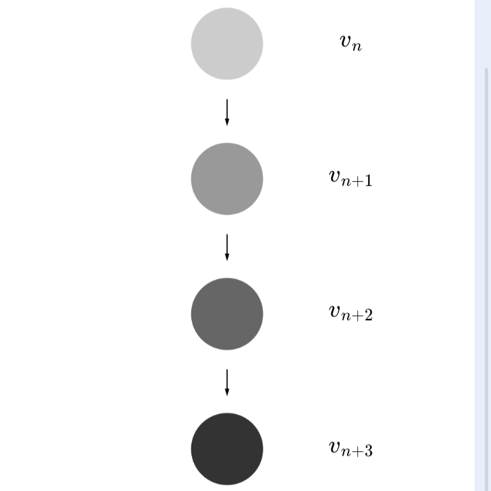
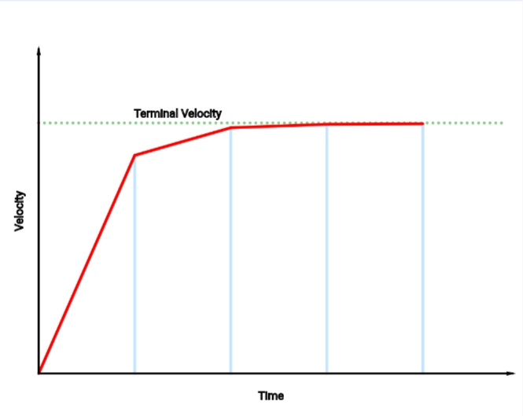
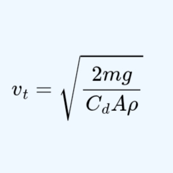

Reality Idealization
Idealization

Discretisation
Geometry
AlgebraThe motion of a falling object under gravity and air drag is described by: $$ \frac{dv}{dt} = g - \frac{k}{m}v^2 $$ To simulate it numerically, we discretise time into small steps \(∆t\) and update the velocity as: $$ v_{n+1} = v_n + \Delta t \left(g - \frac{k}{m}v_n^2\right) $$ At terminal velocity, acceleration becomes zero: So the update can also be written as: $$ v_{n+1} = v_n + \Delta t \cdot g \left(1 - \frac{v_n^2}{v_t^2}\right) $$
$$v_n$$
$$v_{n+1}$$
$$v_{n+2}$$
$$v_{n+3}$$
$$v_{n+4}$$